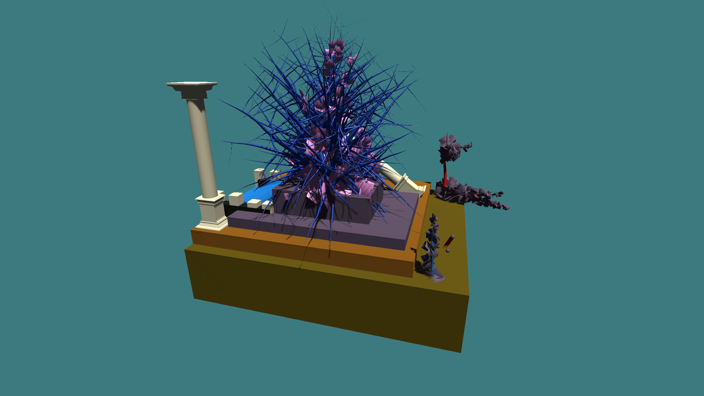

For my fourth interactive I drew upon the concepts of Bonsai and procedural generation or co-creating with code. I used a lot of generative techniques so that “Nature” was in control and I had to cooperate with it even if I might have wanted a specific result. I used the built in Unity tree generator to make sea urchin inspired designs as well as some colourful coral trees. I also brought in some building assets I made while experimenting with other ideas. I also used the particle system to experiment with creating interesting plant effects. This interactive ended up being less something new and more a rehash of ideas already discussed in class. I created something visually interesting but lost the point of the assignment along the way.